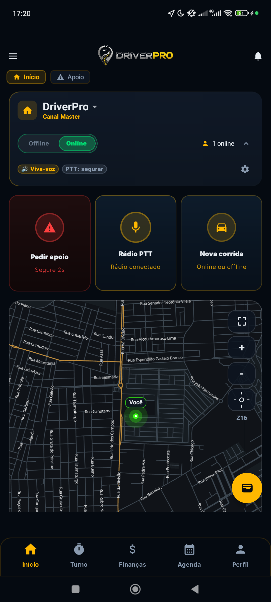
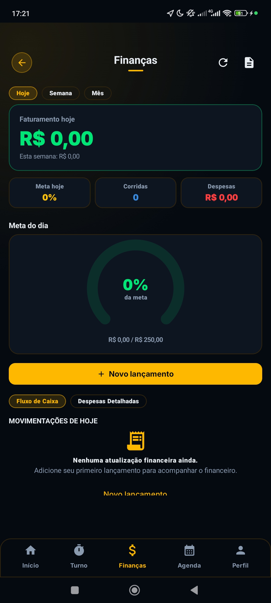
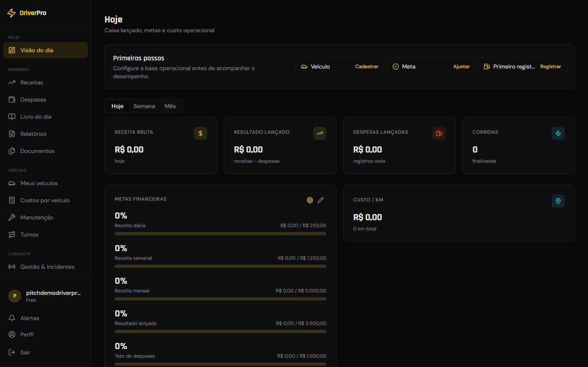

Áudio empilhado
Aviso importante morre no meio de figurinha e corrente. Quem precisava ouvir, não ouviu.
Para quem lidera grupo de motoristas
O zap organiza a conversa. A Canaleta do DriverPRO organiza a operação: mapa ao vivo do grupo, rádio no dedo, botão de apoio e o dinheiro de cada motorista no lugar.
Você conhece essa rotina
Aviso importante morre no meio de figurinha e corrente. Quem precisava ouvir, não ouviu.
Ninguém sabe onde ninguém está. Apoio vira adivinhação: manda localização, printa mapa, liga.
Na hora do sufoco, motorista não tem tempo de digitar. E o grupo só fica sabendo depois.
Você virou administrador de chat. Mas o que a praça precisa é de operação.
O que muda para você
Quem do grupo está Online aparece no mapa. Você enxerga sua praça em tempo real.
Apertou, falou, todo mundo ouviu. PTT como rádio de verdade — sem áudio de 3 minutos.
Motorista em aperto aperta um botão e o grupo vê onde ele está. Sem digitar nada.
Cliente particular apareceu e você não pode pegar? Repassa pra quem está perto, dentro do app.
Tudo acima já está no app hoje — não é promessa de versão futura.
Olha ele aí



Capturas reais do produto em 10/07/2026 — conta limpa de demonstração. A melhor forma de ver é ao vivo, no seu ponto.
O que seus motoristas ganham
Ganhos, combustível e gastos num lugar só. No fim do turno, o motorista sabe se rodou no lucro ou no prejuízo.
Define a meta, acompanha durante o turno e fecha o dia com número na mão — não no chute.
Agenda dos clientes fora dos apps, com repasse dentro da rede quando não der pra atender.
Quanto mais o grupo usa, mais forte a canaleta fica — e quem construiu isso foi você.
Como começa
Instala o app, cria o grupo e vira o dono dele. Leva minutos.
Convida os parceiros de pista. Só entra quem você deixar entrar.
Mapa, rádio e apoio funcionando no primeiro dia. A gente acompanha junto no começo.
Instalação hoje é por APK direto com a gente — te guiamos no passo a passo, aparelho por aparelho se precisar.
Regras do jogo
Quanto custa
Os primeiros grupos usam tudo sem pagar. Sem cartão, sem fidelidade, sem letra miúda.
Uso de verdade por algumas semanas e feedback direto: o que funcionou, o que travou, o que falta.
Quem entra agora ajuda a decidir o que o app vira — e será tratado como fundador quando o plano pago chegar.
Próximo passo
Marca uma demonstração ao vivo — no seu ponto, com seu celular. Em meia hora você vê o mapa, o rádio e o botão de apoio funcionando. Se fizer sentido, seu grupo começa na mesma semana.
Karlos · fundador do DriverPRO. Contato direto, sem atendente, sem robô.
Viu, testou, não curtiu? Sem problema. A demonstração não te amarra em nada.
driver-pro.com.br · demonstração ao vivo disponível